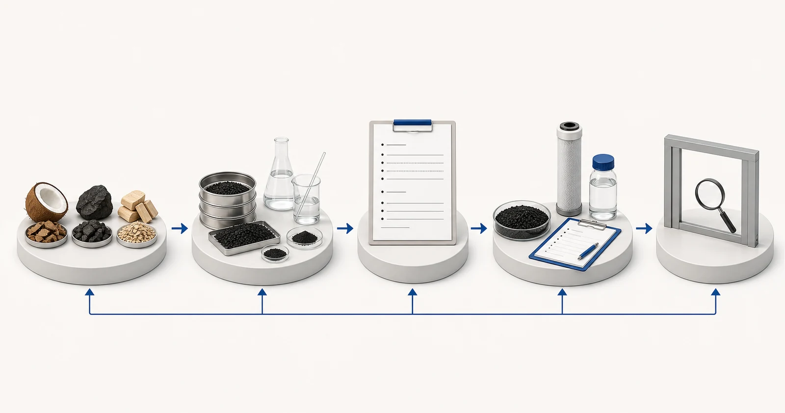

Câu trả lời trực tiếp
Thông số than hoạt tính là dữ liệu đầu vào để so sánh, không phải dự báo đầy đủ về hiệu quả vận hành thực tế. Gáo dừa, than đá và gỗ có thể tạo ra các cấu trúc lỗ xốp khác nhau sau khi hoạt hóa, nhưng chỉ tên nguyên liệu không quyết định mức độ phù hợp. Chỉ số iốt là một giá trị dùng để đặc trưng hóa vật liệu và không nên được trình bày như dung lượng hấp phụ áp dụng chung cho mọi chất ô nhiễm. Mesh mô tả phân bố kích thước hạt; hàm lượng tro, độ ẩm và độ cứng phản ánh các đặc tính vật liệu khác. Việc rửa bằng axit hoặc các công đoạn xử lý sau khác phải được xác định bằng bản thông số được cung cấp và bằng chứng. Một đánh giá có trách nhiệm cần liên hệ thông số của lô hàng với hợp chất mục tiêu, đặc tính hóa học của nước, điều kiện tiếp xúc, cấu tạo và kế hoạch kiểm soát chất lượng trước khi đưa ra khuyến nghị.
Bắt đầu từ vấn đề của người mua
Bảng thông số mua hàng thường đặt một giá trị nổi bật cạnh nguồn nguyên liệu than và gợi ý cách xếp hạng đơn giản. Cách làm tắt này có thể gây ra hai sai sót: có thể loại bỏ vật liệu phù hợp vì một giá trị riêng lẻ thấp hơn, hoặc chấp thuận vật liệu không phù hợp vì giá trị đó cao hơn. Sự hấp phụ phụ thuộc vào mối quan hệ giữa phân tử mục tiêu, phân bố lỗ xốp, đặc tính hóa học bề mặt, các chất cạnh tranh và điều kiện vận hành. Phiếu kết quả phân tích mô tả một số đặc tính được lựa chọn của một mẫu hoặc lô hàng; phiếu này không mô phỏng toàn bộ hệ thống xử lý.
Người mua cũng cần phân biệt dữ liệu về vật liệu lọc rời với bằng chứng về lõi lọc thành phẩm. Lõi than ép khối bao gồm than, chất kết dính và cấu trúc hình thành trong quá trình sản xuất. Lõi lọc than hạt bao gồm lưới giữ hạt, tấm đệm, vật liệu vỏ và cách phân phối dòng chảy. Ngay cả khi sử dụng cùng một cấp vật liệu than, thành phẩm vẫn có thể tạo ra các đặc tính tiếp xúc và áp suất khác nhau. Vì vậy, thông số cần có khả năng truy xuất từ vật liệu lọc đã được phê duyệt đến cấu tạo thành phẩm và, khi có liên quan, đến thử nghiệm đối với chất ô nhiễm cụ thể.
Cần cung cấp báo cáo và dữ liệu vận hành nào
Gửi mục tiêu xử lý và báo cáo về nước cùng với bản thông số đề xuất. Việc đánh giá cần xác định giá trị nào dùng để kiểm soát mua hàng, giá trị nào là dữ liệu đầu vào cho quá trình và giá trị nào cần thử nghiệm riêng trên thành phẩm.
- nguyên liệu than và mô tả quá trình hoạt hóa hoặc xử lý sau
- chỉ số iốt kèm phương pháp thử và cơ sở báo cáo kết quả
- phân bố kích thước hạt hoặc phân bố theo cỡ mesh và lượng hạt dưới cỡ hoặc quá cỡ cho phép
- hàm lượng tro, độ ẩm và độ cứng kèm phương pháp thử
- tình trạng rửa bằng axit hoặc xử lý hóa học khác và tiêu chí chấp nhận tương ứng
- khối lượng riêng biểu kiến và cơ sở quy cách đóng gói khi dự kiến nạp vật liệu vào bình lọc
- chất ô nhiễm mục tiêu, các thành phần cạnh tranh trong nước và điều kiện vận hành
- khả năng truy xuất lô hàng, tần suất lấy mẫu và yêu cầu về phiếu kết quả phân tích
Báo cáo cần đủ mới để đại diện cho nguồn nước dự kiến và nên nêu ngày cùng vị trí lấy mẫu. Nếu nước thay đổi theo mùa, lô sản xuất hoặc trạng thái vận hành, hãy cung cấp khoảng biến động thay vì một kết quả được chọn cho thuận tiện. Nêu riêng mục tiêu nước sau xử lý cần đạt và kết quả phân tích hiện tại. Khi chưa biết một giá trị, hãy ghi rõ là chưa biết; một khoảng trống được thể hiện rõ an toàn hơn một con số phỏng đoán.
Thông tin thủy lực cần được xem xét cùng thông tin hóa học. Chỉ dùng lưu lượng trung bình có thể che khuất các đợt lưu lượng cực đại ngắn, chế độ vận hành gián đoạn và thời gian nước lưu đọng kéo dài. Cần xác nhận thời gian vận hành hằng ngày, nhu cầu cực đại, áp suất sẵn có, tổn thất áp suất cho phép, kích thước thiết bị và người chịu trách nhiệm giám sát, thay than. Những chi tiết này quyết định liệu một vật liệu vốn có vẻ phù hợp có thể được sử dụng trong hệ thống có thể vận hành và bảo trì hay không.
Cơ sở lựa chọn
Bắt đầu từ vai trò của từng giá trị. Kích thước hạt ảnh hưởng đến đặc tính thủy lực và diện tích bề mặt ngoài sẵn có, trong khi lượng hạt mịn quá mức có thể ảnh hưởng đến việc thao tác vật liệu và thiết bị phía sau. Độ cứng có thể liên quan đến sự hao mòn hạt trong quá trình vận chuyển, nạp vật liệu hoặc rửa ngược. Độ ẩm ảnh hưởng đến việc tính khối lượng ở trạng thái nhận hàng. Hàm lượng tro mô tả phần cặn không phải carbon theo phương pháp được nêu. Các thông số này có thể hỗ trợ kiểm soát chất lượng, nhưng từng thông số phải được diễn giải cùng với phương pháp thử và khoảng chấp nhận.
Xem chỉ số iốt là một kết quả đặc trưng hóa vật liệu, không phải cam kết trực tiếp về xử lý clo, PFAS, VOCs, màu hoặc mục tiêu xử lý khác. Hai loại than có chỉ số iốt tương tự có thể hoạt động khác nhau đối với một hợp chất cụ thể do phân bố lỗ xốp và đặc tính bề mặt khác nhau. Ngược lại, chỉ riêng sự khác biệt về chỉ số iốt không định lượng được sự khác biệt về thời gian sử dụng. Bằng chứng đối với chất ô nhiễm cụ thể và điều kiện dự án vẫn cần thiết.
Nguyên liệu nên định hướng các câu hỏi thay vì khép lại quá trình lựa chọn. Than từ gáo dừa, than đá và gỗ được sản xuất từ các nguyên liệu ban đầu khác nhau và có thể được lựa chọn theo các mục tiêu khác nhau về lỗ xốp hoặc thao tác vật liệu, nhưng các lựa chọn trong sản xuất và hoạt hóa vẫn có vai trò quan trọng. Hãy yêu cầu bản thông số hiện hành của nhà cung cấp, phương pháp thử, phiếu kết quả của lô hàng và cách thức kiểm soát thay đổi. Nếu vật liệu lọc sẽ được dùng cho một thành phẩm được chứng nhận, hãy xác nhận rằng việc thay thế vật liệu được kiểm soát theo các quy định áp dụng về danh mục sản phẩm được chứng nhận và việc chứng nhận.

- Nguồn nguyên liệu
- Thông số đo được của lô hàng
- Phương pháp và khả năng truy xuất mẫu
- Báo cáo dự án và cơ sở vận hành
- Đánh giá kỹ thuật
Hình minh họa khái niệm. Không phải kết quả thử nghiệm, chứng nhận sản phẩm hoặc bản vẽ kỹ thuật.
Bối cảnh tiền xử lý, thiết bị và vận hành
Đối với bình lọc, thông số phải gắn với khối lượng nạp, thể tích lớp vật liệu, độ giãn nở thủy lực của lớp vật liệu, khả năng giữ hạt của lưới, rửa ngược và quản lý hạt mịn. Đối với lõi lọc, cần xác nhận giá trị mô tả vật liệu rời trước khi sản xuất hay thành phẩm. Không thể mô tả đầy đủ đặc tính của lõi than ép khối chỉ bằng phiếu kết quả của than rời, và bộ lọc than hạt lắp trực tiếp trên đường ống vẫn cần được kiểm tra về cấu tạo, kích thước và áp suất.
Kiểm tra đầu vào cần sử dụng cách lấy mẫu và phương pháp đã thống nhất. Kết quả của nhà cung cấp và người mua có thể khác nhau nếu cơ sở tính theo độ ẩm, cách chuẩn bị mẫu hoặc phiên bản phương pháp không đồng nhất. Vì vậy, báo giá và hồ sơ phê duyệt cần viện dẫn phiên bản của bản thông số và xác định cách xử lý các lô hàng có giá trị nằm ngoài khoảng chấp nhận. Yuchen Water có thể hỗ trợ lập tài liệu này và đối chiếu vật liệu đã được phê duyệt với lõi lọc hoặc thiết bị phù hợp.
Những sai lầm thường gặp
- Xếp hạng mọi ứng dụng của than theo chỉ số iốt
- Công bố tên nguyên liệu như một tuyên bố về khả năng loại bỏ chất ô nhiễm
- So sánh các giá trị thu được bằng những phương pháp khác nhau mà không nêu điều kiện áp dụng hoặc giới hạn
- Áp dụng phiếu kết quả của vật liệu lọc rời cho mọi cấu tạo lõi lọc thành phẩm
- Bỏ qua khả năng truy xuất lô hàng và kiểm soát sửa đổi bản thông số
Bằng chứng và phạm vi dịch vụ
Phiếu kết quả phân tích cần được trình bày như bằng chứng của lô hàng hoặc mẫu. Không được viết lại nội dung phiếu này thành bảo đảm về thời gian sử dụng, năng lực xử lý của hệ thống hoặc nồng độ đầu ra. Khi Yuchen Water công bố dữ liệu thử nghiệm được lựa chọn, trang cần xác định mẫu và điều kiện đã thử nghiệm, đồng thời mời người mua yêu cầu bằng chứng tương ứng thay vì ngụ ý rằng mọi sản phẩm đều có cùng kết quả.
Phạm vi cung ứng vật liệu có thể bao gồm bản thông số đã được xem xét, tài liệu thử nghiệm hiện có và hỗ trợ lựa chọn thiết bị phù hợp. Giá trị chấp nhận, tần suất thử nghiệm và các tuyên bố về thành phẩm phải được thống nhất cho đơn hàng thực tế. Nếu một tuyên bố được yêu cầu chưa có bằng chứng hiện hành hỗ trợ, kết quả đúng của việc đánh giá là xác định khoảng trống bằng chứng hoặc đề xuất thử nghiệm, không phải một giả định tiếp thị.
Yuchen Water xem xét mục tiêu và bằng chứng trước, sau đó xác định dạng than phù hợp và những vấn đề về vật liệu cần làm rõ, nhu cầu tiền xử lý và thiết bị hỗ trợ, cùng những tài liệu hoặc thử nghiệm vẫn còn cần thiết. Kết quả có thể là định hướng sơ bộ, yêu cầu bổ sung thông tin hoặc khuyến nghị về vật liệu và thiết bị có cơ sở. Khuyến nghị không được đưa ra chỉ vì người mua đã cung cấp tên sản phẩm.
Sau khi cung cấp sản phẩm, hỗ trợ kỹ thuật có thể bao gồm xác nhận tài liệu, giải đáp về lắp đặt và súc rửa, hướng dẫn chạy thử đưa vào vận hành từ xa, các điểm giám sát và lập kế hoạch thay thế trong phạm vi đã thỏa thuận. Hiệu quả thực tế vẫn phụ thuộc vào vật liệu được phê duyệt, hệ thống thiết bị đầy đủ, nước nguồn, việc lắp đặt, vận hành và bảo trì. Hướng dẫn đã công bố không thể thay thế việc đánh giá dự án.
Không cam kết về vật liệu cuối cùng, dung lượng xử lý, tuổi thọ sử dụng, tỷ lệ loại bỏ hoặc kết quả dự án trước khi xem xét báo cáo, cấu tạo, bằng chứng và điều kiện vận hành.
Nguồn kỹ thuật chính thức
Các nguồn này giải thích nguyên lý xử lý hoặc giới hạn phạm vi chứng nhận. Các nguồn này không chứng nhận sản phẩm của Yuchen Water và không thay thế bằng chứng riêng cho từng dự án.
Hướng dẫn liên quan về than hoạt tính
Tiếp tục tìm hiểu nhóm tài liệu kiến thức, rà soát bằng chứng của các mẫu được chọn chỉ trong phạm vi giới hạn đã nêu, so sánh các dạng sản phẩm hoặc gửi báo cáo để đánh giá kỹ thuật.